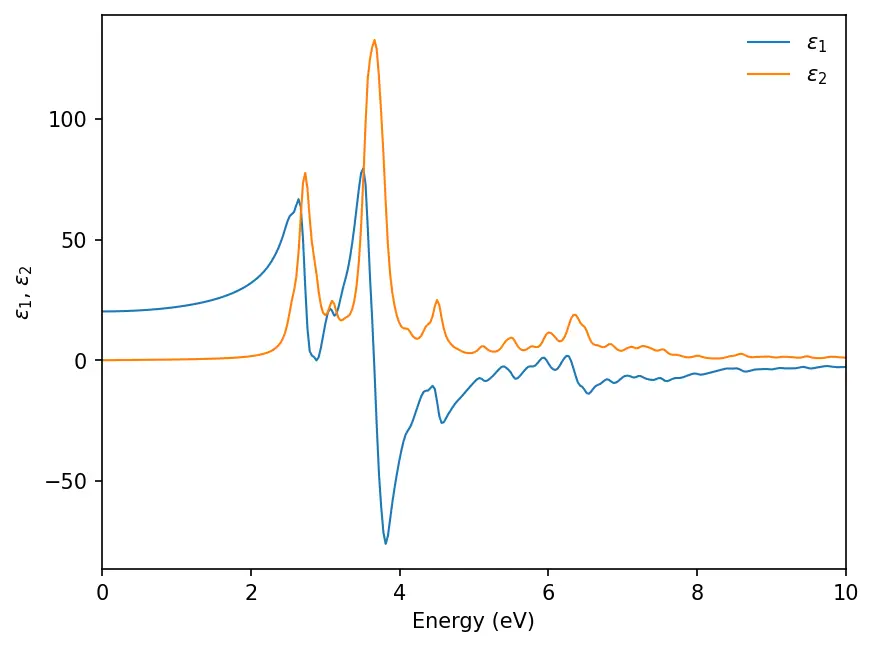
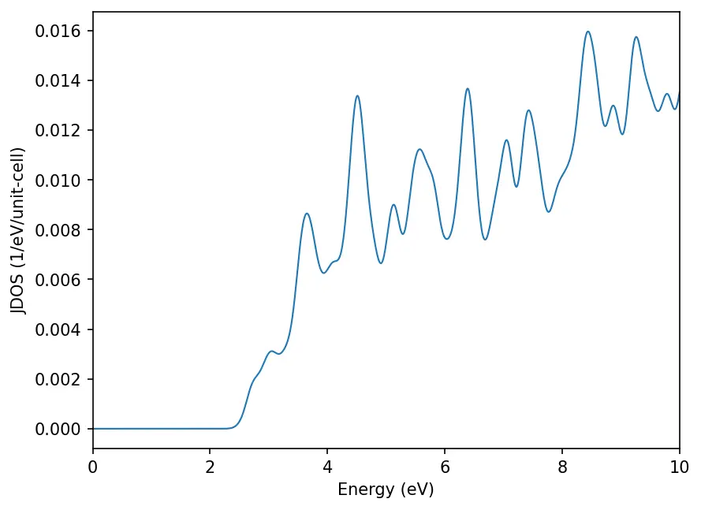

Constante dielétrica
Primeiro fazemos o cálculo autoconsistente:
mpirun -np 4 pw.x -i pw.scf.silicon_epsilon.in > pw.scf.silicon_epsilon.out&CONTROL
calculation = 'scf',
prefix = 'silicon',
outdir = './tmp/'
pseudo_dir = '../pseudos/'
verbosity = 'high'
/
&SYSTEM
ibrav = 2,
celldm(1) = 10.26,
nat = 2,
ntyp = 1,
ecutwfc = 40
nbnd = 20
nosym = .TRUE.
noinv = .TRUE.
/
&ELECTRONS
mixing_beta = 0.6
conv_thr = 1.0d-10
/
ATOMIC_SPECIES
Si 28.086 Si.pz-vbc.UPF
ATOMIC_POSITIONS (alat)
Si 0.0 0.0 0.0
Si 0.25 0.25 0.25
K_POINTS automatic
6 6 6 0 0 0Observe em especial as seguintes mudanças:
nbnd = 20
nosym = .true.
noinv = .true.Desligamos a redução automática de pontos k que o pw.x faz usando as simetrias do cristal (nosym = .true. e noinv = .true.). Isso porque o epsilon.x não reconhece simetrias cristalinas, então é preciso a lista completa de pontos k da malha. Em segundo lugar, calculamos um número maior de bandas (20), pois nos interessam as transições interbanda. Note também que o epsilon.x não aceita a redução da malha de pontos k à zona de Brillouin irredutível; por isso, os cálculos PW devem usar uma malha uniforme de pontos k, todos com o mesmo peso. Ou seja, no card de pontos k as coordenadas devem ser dadas manualmente em crystal, alat ou bohr, e não com a opção automatic. Ainda assim, a opção automática parece funcionar com nosym = .true. e noinv = .true.. Se necessário, podemos fazer um cálculo nscf com uma malha de pontos k mais fina.
O próximo passo é preparar o arquivo de entrada do epsilon.x:
&inputpp
outdir = "./tmp/"
prefix = "silicon"
calculation = "eps"
/
&energy_grid
smeartype = "gauss"
intersmear = 0.15
intrasmear = 0.0
wmin = 0.0
wmax = 30.0
nw = 1000
/As variáveis smeartype e intersmear definem a aproximação numérica usada para representar as funções delta de Dirac na expressão de \(\epsilon_2\) dada acima. Para metais, também é preciso usar o parâmetro de alargamento intrasmear, geralmente de 0,1 a 0,2 eV. As variáveis wmin, wmax e nw definem a malha de energia da função dielétrica. Todas as energias estão em eV.
mpirun -np 4 epsilon.x -i epsilon.si.in > epsilon.si.outOs resultados são salvos em arquivos .dat separados. Podemos fazer o gráfico das partes real (\(\epsilon_1\)) e imaginária (\(\epsilon_2\)) da constante dielétrica:
import matplotlib.pyplot as plt
from matplotlib import rcParamsDefault
import numpy as np
%matplotlib inline
plt.rcParams["figure.dpi"]=150
plt.rcParams["figure.facecolor"]="white"
data_r = np.loadtxt('../src/silicon/epsr_silicon.dat')
data_i = np.loadtxt('../src/silicon/epsi_silicon.dat')
energy_r, epsilon_r = data_r[:, 0], data_r[:, 1]
energy_i, epsilon_i = data_i[:, 0], data_i[:, 1]
plt.plot(energy_r, epsilon_r, lw=1, label="$\\epsilon_1$")
plt.plot(energy_i, epsilon_i, lw=1, label="$\\epsilon_2$")
plt.xlim(0, 15)
plt.xlabel("Energy (eV)")
plt.ylabel("$\\epsilon_1~/~\\epsilon_2$")
plt.legend(frameon=False)
plt.show()
Pseudopotenciais ultrasoft não funcionam com o epsilon.x; use pseudopotenciais de norma conservada. Note também que o exemplo acima não foi testado quanto à malha de pontos k. Em geral, \(\epsilon\) precisa de uma malha mais fina para convergir. Por padrão, o número máximo de pontos k no Quantum ESPRESSO é 40000; se precisar de mais, altere o Modules/parameters.f90 e recompile o Quantum ESPRESSO.
Densidade de estados conjunta
A JDOS dá o número de estados para um par de estados inicial e final em função da frequência (em eV). Uma intensidade maior indica maior absorção no espectro de absorção. Arquivo de entrada para o cálculo da JDOS:
&INPUTPP
outdir = "./tmp/"
prefix = "silicon"
calculation = "jdos"
/
&ENERGY_GRID
smeartype = "gauss"
intersmear = 0.15
intrasmear = 0.0
wmin = 0.0
wmax = 10.0
nw = 1000
shift = 0.0
/Sequência de passos:
mpirun -np 16 pw.x -in pw.scf.silicon_epsilon.in > pw.scf.silicon_epsilon.out
mpirun -np 16 pw.x -in pw.nscf.silicon_epsilon.in > pw.nscf.silicon_epsilon.out
mpirun -np 16 epsilon.x -in epsilon.jdos.si.in > epsilon.jdos.si.out
Recursos
Conteúdo adaptado de Dielectric constant, do Quantum Espresso Tutorial de Pranab Das, sob licença CC BY 4.0. Alterações: texto traduzido para o português; layout e navegação adaptados.